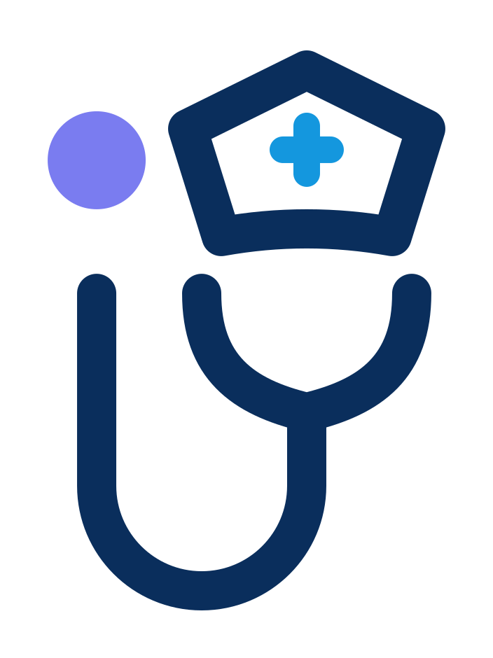
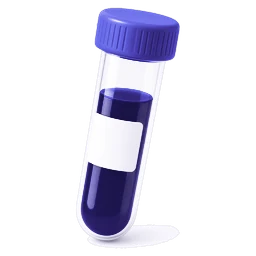
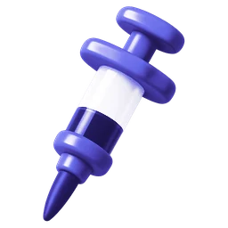
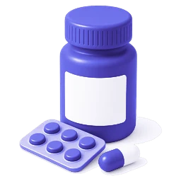
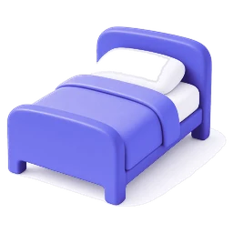
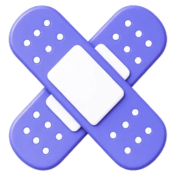
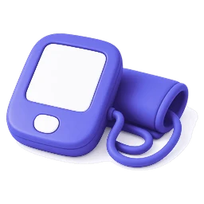
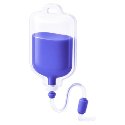

Verificamos su registro
Antes de atender revisamos su inscripción en la Superintendencia de Salud, su identidad y sus antecedentes.


CuidappCuéntanos qué necesitas y te mostramos a las enfermeras y TENS de tu comuna con hora disponible, su precio y sus reseñas. Eliges, pagas y sigues su llegada en el mapa.

Laboratorio ejemploProvidencia · a domicilioElige entre 655 exámenes, sube la foto de tu orden para que los seleccionemos por ti o pide ayuda para elegir. Luego decides: toman la muestra en tu casa o vas a un laboratorio cercano.

Vitamina C endovenosaCon receta$39.990B12, vitamina D, vitamina C endovenosa y sueroterapia, administradas por una enfermera. Ves el precio antes de reservar y, si corresponde, te pedimos la receta.
Cada profesional anota en la misma ficha: curaciones, signos vitales, remedios y alergias. Tú decides con quién compartirla y la descargas en PDF cuando la necesites.

Losartán 50 mgCada 24 h08:00Dile qué remedio toma tu mamá y a qué hora, o cuándo es su próximo control. Te avisamos ese día, y si cambia el horario, lo actualizas en un mensaje.
Vinculas tu Isapre una vez y el agente de Cuidapp envía la boleta, la orden médica y tu carnet después de cada atención. La gestión cuesta $3.500 y está sujeta a las condiciones de cada Isapre.
Hoy ya descargas la boleta y el detalle de prestaciones para Fonasa o tu Isapre. Información general, no es asesoría legal.
Ingresas tus datos una vez y asesores de distintas Isapres te muestran sus planes, para comparar con calma antes de decidir.
Las condiciones de cada plan las define cada Isapre. No es asesoría legal ni financiera.

Pacientes postrados
Curaciones
Paliativos y crónicos
Sondas y ostomíasProcedimientos, cuidados de adulto mayor y pacientes postrados, turnos, recuperación y educación a la familia.
Recibes en tu casa a alguien que conoces antes de abrir la puerta.
Antes de atender revisamos su inscripción en la Superintendencia de Salud, su identidad y sus antecedentes.
Cada profesional muestra su precio y qué incluye. Pagas al confirmar, sin sorpresas en la puerta.
Reseñas de quienes ya se atendieron con esa persona, su experiencia y los servicios que hace.
Le escribes por chat para coordinar detalles y sigues su llegada en el mapa el día de la atención.
Precios de referencia para los servicios más pedidos. Cada profesional fija el suyo y lo ves completo antes de confirmar.
Precios de referencia del mercado en Santiago, octubre de 2026. Los medicamentos y la ampolla los aporta la paciente con su receta. Tu primera atención tiene 15% de descuento, hasta $20.000, con CUIDA15.
Tú decides quién ve tu ficha: todo o solo el resumen. Revisa quién la abrió y cuándo, y revoca un acceso cuando quieras.
Ves el precio y qué incluye antes de confirmar. Eliges a la profesional, el día y la hora, y puedes reprogramar desde tu reserva.
Defines tus servicios, precios, comunas y horario. Dictas la nota de la visita y queda en la ficha.
Súmate como aliado de Cuidapp.
¿No encuentras tu respuesta? Escríbenos desde tu reserva.
Enfermeras y TENS. Antes de atender revisamos su registro en la Superintendencia de Salud, su identidad y sus antecedentes. En su perfil ves su experiencia, sus servicios y las reseñas de otras familias.
No es obligatoria. Puedes elegir tus exámenes, subir la foto de tu orden para que los seleccionemos por ti, o pedir ayuda para elegir. Para inyecciones y algunos tratamientos sí te pediremos la receta.
Sí. En «Laboratorios cerca de ti» eliges el laboratorio y si quieres que vayan a tu casa o ir tú a su sucursal.
Pagas con tarjeta al reservar y antes de confirmar ves el precio total. En tu primera atención tienes 15% de descuento, hasta $20.000, con el código CUIDA15.
Vinculas tu Isapre una vez y el agente de Cuidapp envía la boleta, la orden médica y tu carnet después de cada atención. La gestión cuesta $3.500. Está sujeto a las condiciones de cada Isapre y llega muy pronto. Información general, no es asesoría legal.
Una forma de comparar planes de distintas Isapres con asesores, dentro de Cuidapp. Llega muy pronto. Las condiciones de cada plan las define cada Isapre.
Tú decides quién tiene acceso. Puedes compartirla con tu familia o cuidadores, ver quién la abrió y revocar un acceso cuando quieras.
Partimos en Santiago. Al poner tu dirección ves qué profesionales atienden en tu comuna.
Hoy atienden enfermeras y TENS; kinesiología, psicología, telemedicina y nutrición vienen muy pronto, y ya puedes postular con tu carnet, una selfie y tu título.
Escríbenos desde la sección Aliados. Los laboratorios se suman gratis y los asesores de Isapre aparecen en «Cotiza tu Isapre» con un plan mensual.
15% de descuento, hasta $20.000, con el código CUIDA15.